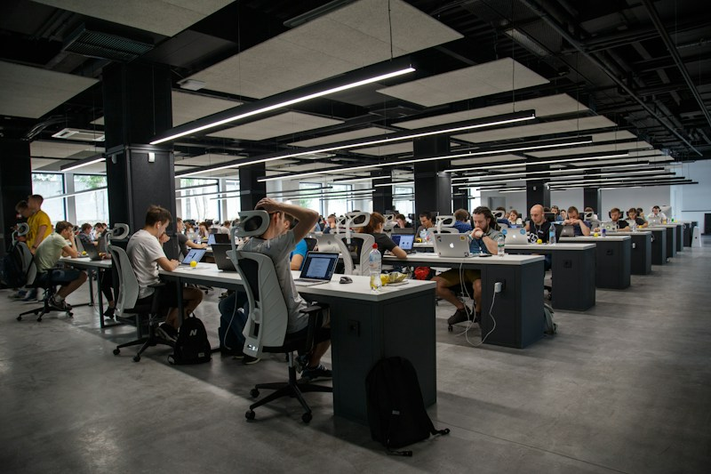

Cuộc Cách Mạng Trí Tuệ Nhân Tạo: Tương Lai Của Ngành Phát Triển Phần Mềm

Trí tuệ nhân tạo (AI) và Machine Learning đang định hình lại toàn bộ phương thức mà chúng ta tiếp cận với lập trình và thiết kế giao diện web. Thay vì mất nhiều giờ viết các đoạn mã boilerplate lặp đi lặp lại, các kỹ sư phần mềm ngày nay có thể tập trung vào tư duy kiến trúc hệ thống và trải nghiệm người dùng.
Việc kết hợp hài hòa giữa các tiêu chuẩn web hiện đại như Semantic HTML5, CSS Grid, Flexbox cùng sự trợ lực của các công cụ thông minh giúp tối ưu hóa hiệu năng, giảm thời gian tải trang và đem lại sự tương tác linh hoạt trên mọi kích cỡ màn hình.